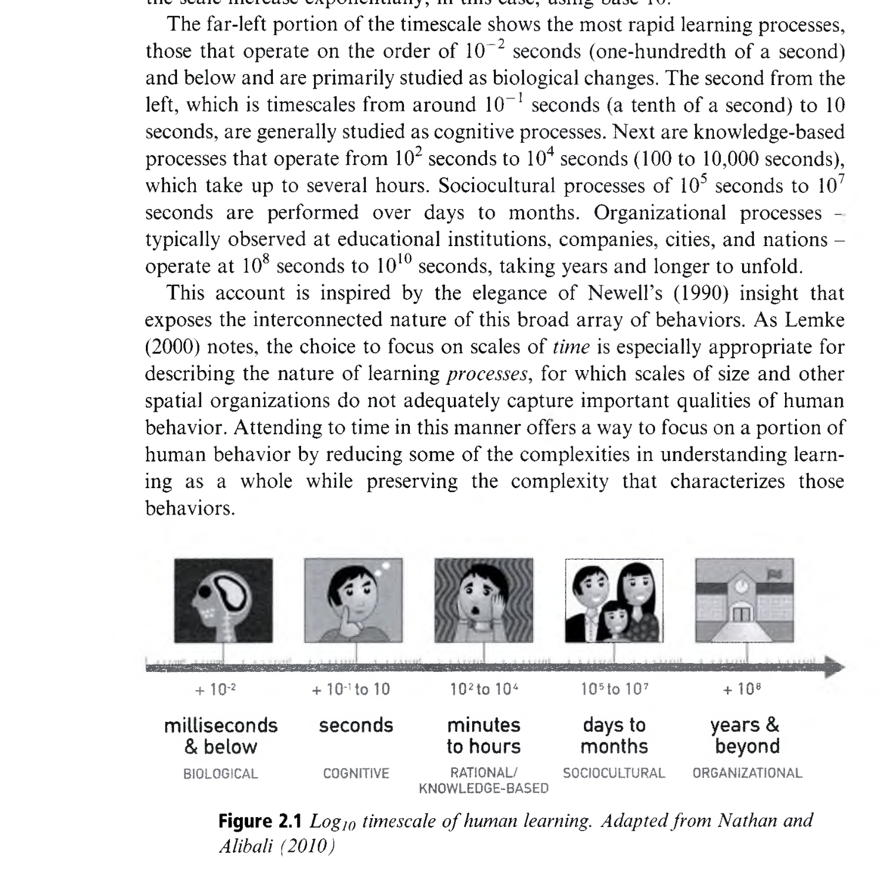
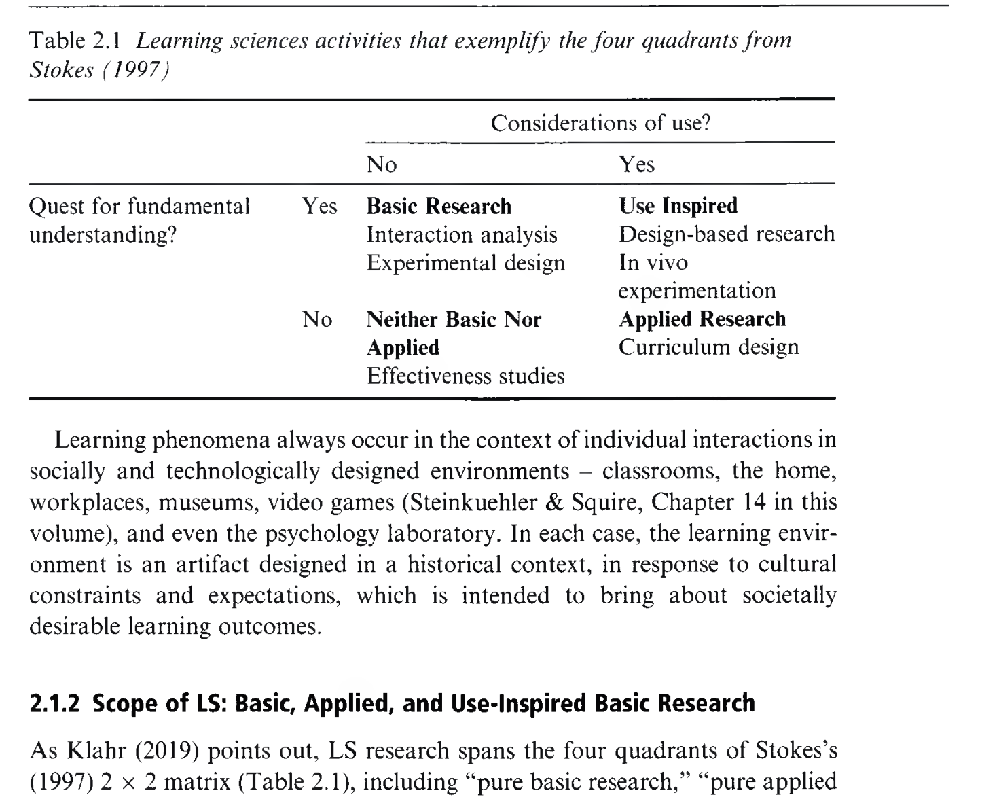
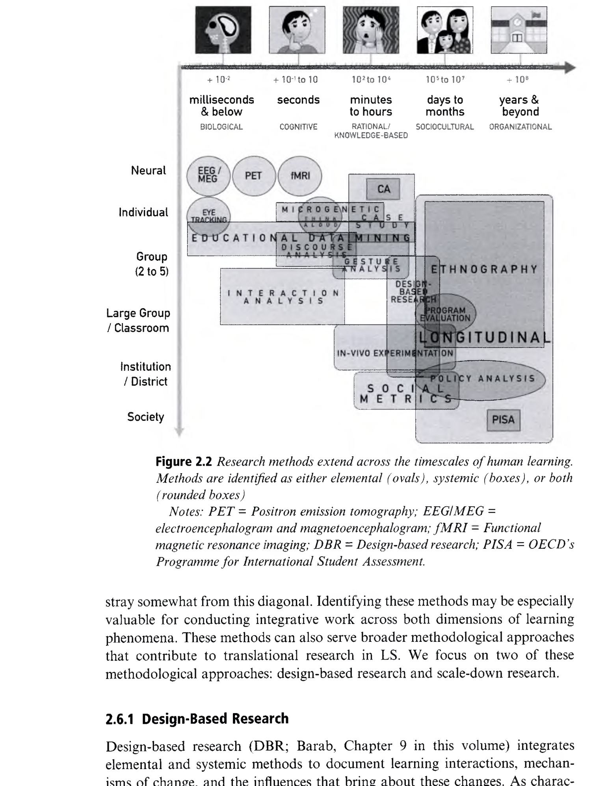

Foundations of the Learning Sciences
학습과학의 학문적 기초: 지적 토대, 인식론, 그리고 요소·체계의 통합
👥 저자 및 출처
Mitchell J. Nathan (Univ. of Wisconsin–Madison)
R. Keith Sawyer (Univ. of North Carolina at Chapel Hill)
『The Cambridge Handbook of the Learning Sciences』 (3rd Ed., 2022, pp. 27–53)
🎯 챕터 핵심 아젠다
- 인간 학습의 시간 척도 (Log₁₀): 신경부터 사회제도까지
- 파스퇴르 사분면: 용도 지정 기초 연구(Use-Inspired)
- 5대 지적 토대: 프래그머티즘, 구성주의, 사회문화, 상황, 체화
- 요소적(Elemental) vs 체계적(Systemic) 원리와 DBR 통합
🎯 강의 목표 및 핵심 맥락 (Context & Goal)
본 장은 학습과학이라는 학문의 철학적·인식론적·방법론적 기초를 총체적으로 정립하는 핵심 챕터입니다. 미시적 인지 메커니즘(요소적)과 거시적 사회문화 생태계(체계적)가 어떻게 파스퇴르 사분면과 디자인 기반 연구(DBR) 안에서 융합되는지 제시합니다.
📖 원문 심층 학술 해설 (Detailed Academic Commentary)
네이선과 소이어는 학습과학이 기존 인지심리학의 협소한 실험실 연구나 전통 교육학의 탈이론적 처방을 극복하고, 5대 지적 전통(프래그머티즘, 구성주의, 사회문화이론, 상황학습, 체화인지)을 통합하여 탄생했음을 논증합니다.
💡 수업/세미나 진행 팁 & 질문 가이드
"밀리초 단위의 뇌세포 반응과 수개월에 걸친 프로젝트 협력 담화는 어떻게 하나의 통일된 '학습'으로 연결될 수 있을까요?"라는 발문으로 강의를 시작하세요.
인간 학습의 Log₁₀ 시간 척도 5대 밴드 (Figure 2.1)
밀리초(ms) 단위 신경 반응부터 수 세기 사회 제도까지의 통합 스펙트럼
⏱️ 5대 학습 밴드 (Nathan & Alibali, 2010)
- 생물학적 밴드 (10⁻² ~ 10⁰ s): 신경 가소성, EEG, 시선 고정
- 인지적 밴드 (10⁰ ~ 10² s): 작업기억 처리, 표상 결합, 키스트로크
- 합리적 밴드 (10² ~ 10⁴ s): 문제 해결, 1회 수업 단위 미시발생
- 사회문화적 밴드 (10⁵ ~ 10⁷ s): CoP 참여 궤적, 프로젝트 담화
- 역사적 밴드 (10⁸ ~ 10¹⁰ s): 교육과정 개혁, 제도의 역사적 진화

🎯 강의 목표 및 핵심 맥락
알렌 뉴웰(Newell, 1990)의 대수 시간 척도 이론을 바탕으로 학습과학이 포괄하는 5개 인지·사회 밴드의 전 범위를 규명합니다.
📖 원문 심층 학술 해설
학습은 단일 시간 척도의 현상이 아닙니다. 시선 추적(Cognitive)과 소집단 비디오 상호작용 분석(Sociocultural)은 상호 배타적인 것이 아니라, 동일한 학습 생태계를 서로 다른 시간 척도 렌즈로 포착하는 상호 보완적 분석입니다.
💡 수업/세미나 진행 팁 & 질문 가이드
각 시간 척도별로 수집할 수 있는 데이터(예: EEG vs 대화 전사록 vs 학업성취도)의 특성을 비교해 보세요.
학습과학의 위상: 파스퇴르 사분면 (Table 2.1)
근본적 이해의 추구와 실용적 설계의 동시 달성 (Stokes, 1997)
🔬 Stokes의 2x2 과학 연구 매트릭스
- 보어 사분면 (Bohr): 순수 기초 연구 (실험실 인지심리)
- 에디슨 사분면 (Edison): 순수 응용 개발 (이론 없는 에듀테크 앱)
- 파스퇴르 사분면 (Pasteur): 학습과학의 핵심 정체성
- ➔ "학습 메커니즘 이론 규명" + "교실 환경 혁신 설계"

🎯 강의 목표 및 핵심 맥락
스톡스(Stokes, 1997)의 사분면 모델을 통해 학습과학이 왜 '용도 지정 기초 연구(Use-Inspired Basic Research)'인지 논증합니다.
📖 원문 심층 학술 해설
파스퇴르가 백신을 개발하며 미생물학 기초 이론을 정립했듯, 학습과학자는 교실 현장을 개선하는 소프트웨어와 수업을 설계하면서 동시에 인간 인지와 사회적 상호작용의 근본 메커니즘을 밝혀냅니다.
💡 수업/세미나 진행 팁 & 질문 가이드
단순 상업용 교육 앱(에디슨)과 학습과학 기반 DBR 연구(파스퇴르)의 결정적 차이를 토론해 보세요.
디자인 과학과 학습 엔지니어링 (Learning Engineering)
허버트 사이먼의 『인공물의 과학』과 이상적 학습 환경의 창조
🏛️ 자연과학 vs 디자인 과학 (Simon, 1969)
- 자연과학: "사물이 현재 어떻게 존재하는가(How things are)" 기술
- 디자인 과학: "목적을 위해 사물이 어떻게 되어야 하는가(How things ought to be)" 창조
- 학습과학은 이상적인 학습 경험을 실현하는 인공적 시스템 설계 학문
⚙️ 학습 엔지니어링 (Learning Engineering)
- 학습과학 원리를 공학적으로 적용하여 교육 인터페이스 설계
- 이론적 가설 ➔ 디지털 도구 및 비계 구현 ➔ 현장 테스트 ➔ 최적화
- 실증 데이터 피드백 루프를 통한 학습 환경의 연속적 개량
🎯 강의 목표 및 핵심 맥락
허버트 사이먼의 인공물 과학 개념을 학습과학의 '디자인 과학' 정체성과 연결합니다.
📖 원문 심층 학술 해설
학습과학은 현상을 관찰하는 데서 멈추지 않고, 최적의 학습을 촉진하는 새로운 사회적 규범, 테크놀로지 도구, 교수 전략을 능동적으로 엔지니어링합니다.
💡 수업/세미나 진행 팁 & 질문 가이드
교수설계자(Instructional Designer)가 학습과학의 '엔지니어'로서 갖추어야 할 핵심 자질을 논의하세요.
학습과학을 구축한 5대 지적 토대
20세기 철학, 심리학, 인류학의 핵심 사상이 융합된 다학제적 뿌리
1. 미국 프래그머티즘
John Dewey, Peirce: 반성적 탐구(Inquiry), 행동을 통한 학습(Learning by Doing)
2. 구성주의
Piaget, Papert: 동화·조절의 인지 발달 + 디지털 아티팩트 제작(Constructionism)
3. 사회문화이론
Vygotsky, Engeström: 심리적 기호 매개, ZPD, 사회적 상호작용의 내면화
4. 상황 학습
Lave & Wenger: 실천 공동체(CoP) 내 정당한 주변적 참여(LPP)와 정체성
5. 체화·확장·분산 인지
Glenberg, Clark, Hutchins: 신체 감각운동 기반 인지 + 외부 도구와 결합된 마음 + 사람-도구 간 분산 인지
🎯 강의 목표 및 핵심 맥락
학습과학의 5대 지적 토대(프래그머티즘, 구성주의, 사회문화이론, 상황학습, 체화·분산인지)를 총괄 조망합니다.
📖 원문 심층 학술 해설
이 5대 전통은 상호 배타적인 것이 아니라, 학습을 개인의 인지적 구성과 사회적 실천, 신체적 감각운동, 도구적 확장이 유기적으로 결합된 전체로 이해하게 돕습니다.
💡 수업/세미나 진행 팁 & 질문 가이드
5대 사상이 현대의 '에듀테크 기반 프로젝트 수업'에 어떻게 모두 녹아들어 있는지 브레인스토밍해 보세요.
미국 프래그머티즘과 존 듀이(Dewey)의 탐구 이론
"지식은 외부의 수동적 반영이 아니라 환경과의 능동적 상호작용 도구이다"
🔍 반성적 탐구 (Reflective Inquiry)
- 불확실하고 모호한 문제 상황(Indeterminate Situation)과의 대면
- 가설 수립, 실험적 행동, 결과 관찰의 연속적 피드백 루프
- 지식은 절대적 진리가 아닌 문제 해결을 위한 실천적 도구
🏫 민주주의와 진보주의 교육
- "행함으로써 배운다 (Learning by Doing)"
- 학교는 미래 사회 준비소가 아닌 현재 삶을 영위하는 축소판 공동체
- 현대 프로젝트 기반 학습(PBL)과 탐구 과학 교육의 직접적 모태
🎯 강의 목표 및 핵심 맥락
존 듀이의 프래그머티즘 인식론과 반성적 탐구 이론이 학습과학에 미친 영향을 설명합니다.
📖 원문 심층 학술 해설
듀이(1938)에게 학습은 유기체와 환경 간의 '거래(Transaction)'입니다. 수동적으로 정보를 받아들이는 것이 아니라, 환경에 직접 개입하고 그 결과를 반성적으로 성찰할 때 비로소 지식이 구축됩니다.
💡 수업/세미나 진행 팁 & 질문 가이드
듀이의 '탐구(Inquiry)' 개념이 전통적 주입식 교육과 어떻게 근본적으로 다른지 대조해 보세요.
구성주의의 진화: 피아제(Piaget)에서 파퍼트(Papert)까지
내적 인지 도식의 평형화에서 디지털 아티팩트 제작(Constructionism)으로
🧠 피아제의 인지적 구성주의
- 지식은 외부에서 주입되지 않고 능동적으로 구축됨
- 동화(Assimilation)와 조절(Accommodation)의 평형화 과정
- 학습자는 세상의 규칙을 스스로 발견하는 '꼬마 과학자'
🐢 파퍼트의 구성주의 (Constructionism)
- 피아제의 인지 구성을 컴퓨터 코딩(Logo)과 융합
- 공유 가능한 가시적 아티팩트 제작 시 가장 강력한 학습 발생
- 컴퓨터는 '생각을 생각하게 돕는 도구(Object-to-think-with)'
🎯 강의 목표 및 핵심 맥락
피아제의 인지적 구성주의와 시모어 파퍼트의 Constructionism의 연속성과 차별점을 규명합니다.
📖 원문 심층 학술 해설
파퍼트(1993)는 머릿속으로만 생각하는 피아제식 구성을 넘어, 실제로 작동하는 컴퓨터 프로그램이나 로봇 등 외부 아티팩트를 만들 때 오개념이 명시화되고 강력한 학습이 일어난다고 주장했습니다.
💡 수업/세미나 진행 팁 & 질문 가이드
메이커 교육(Maker Education)과 소프트웨어 코딩 교육이 파퍼트의 이론과 어떻게 직결되는지 설명해 보세요.
비고츠키의 사회문화이론: 기호 매개, ZPD, 내면화
"모든 고차 정신 기능은 사회적 상호작용에서 출발하여 내면화된다"
🪓 심리적 기호 매개
언어, 수학 기호, 다이어그램 등 심리적 도구(Psychological Tools)를 매개로 사고
📈 근접발달영역 (ZPD)
독자적 해결 수준과 유능한 타인/도구의 지원을 받아 도달할 수 있는 잠재 발달 영역 간 간극
🔄 이중 수준 내면화
간심리적(Interpsychological, 대화) 수준에서 내심리적(Intrapsychological, 사고) 수준으로 전환
🎯 강의 목표 및 핵심 맥락
비고츠키의 문화역사적 발달 이론의 핵심 3대 개념(기호 매개, ZPD, 내면화)을 명확히 제시합니다.
📖 원문 심층 학술 해설
비고츠키(1978)는 개인의 사고가 사회적 상호작용의 파생물이라고 보았습니다. 교실 내의 협력적 대화와 스캐폴딩은 단순한 교수 기법이 아니라 고차원적 인지 구조를 형성하는 근본 메커니즘입니다.
💡 수업/세미나 진행 팁 & 질문 가이드
ZPD 내에서 교사와 지능형 소프트웨어가 제공해야 할 최적의 비계(Scaffolding) 수준을 토론하세요.
상황 학습: 실천 공동체(CoP)와 정당한 주변적 참여
학습이란 추상적 지식 암기가 아니라 공동체 구성원으로의 정체성 변화이다
👥 정당한 주변적 참여 (LPP, Lave & Wenger)
- 초보자는 실천 공동체(CoP)의 주변부에서 쉬운 과제부터 참여
- 점차 숙련자들과 협력하며 중심적 참여자(Full Participant)로 성장
- 학습 = 지식 습득이 아닌 정체성(Identity)의 변혁
⚡ 상황적 행위 (Situated Actions, Suchman)
- 인간 행동은 머릿속 사전 계획(Plans)의 단순 실행이 아님
- 구체적 물리·사회적 환경과의 즉흥적 상호작용 속에서 상황화
- 맥락과 분리된 지식은 실제 문제 해결에서 작동하지 않음
🎯 강의 목표 및 핵심 맥락
진 레브와 에티엔 벵거의 상황 학습(Situated Learning)과 루시 서치먼의 상황적 행위 이론을 분석합니다.
📖 원문 심층 학술 해설
전통 학교는 지식을 맥락과 분리하여 가르치지만, Lave & Wenger(1991)는 학습이 본질적으로 사회적 실천 공동체에의 참여라고 보았습니다. 학생은 '지식 소비자'가 아니라 학문 공동체의 '신참자'로서 실천에 동참해야 합니다.
💡 수업/세미나 진행 팁 & 질문 가이드
오픈소스 개발 커뮤니티(GitHub)에서 신규 기여자가 성장하는 과정이 어떻게 LPP의 완벽한 사례인지 설명해 보세요.
체화 인지, 확장 마음, 분산 인지
사고는 뇌 안에 갇혀 있지 않으며 신체, 도구, 사람 전체에 물리적으로 분산된다
🤸 체화 인지 (Embodied)
Glenberg, Nathan, Alibali: 추상 수학·과학 개념도 신체 감각운동 및 제스처에 접지(Grounded)됨
📱 확장 마음 (Extended)
Clark & Chalmers: 스마트폰, 계산기, 메모장은 뇌의 인지 처리를 직접 대행하는 마음의 연장
🚢 분산 인지 (Distributed)
Edwin Hutchins: 지식은 한 사람의 머리가 아닌 동료, 차트, 디지털 계측기 전체에 분산 작동
🎯 강의 목표 및 핵심 맥락
인지과학의 최신 패러다임인 체화 인지(Embodied), 확장 마음(Extended), 분산 인지(Distributed)의 핵심을 규명합니다.
📖 원문 심층 학술 해설
알리발리와 네이선(Alibali & Nathan, 2012)은 수학 수업에서 교사와 학생의 손짓(Gestures)이 추상적 기호와 공간적 사고를 잇는 체화된 다리 역할을 함을 밝혔습니다. 허친스(1995)의 해군 항해 연구는 지능이 시스템 전체에 분산되어 있음을 실증했습니다.
💡 수업/세미나 진행 팁 & 질문 가이드
우리가 복잡한 계산을 할 때 연필과 종이를 쓰는 행위가 왜 '확장된 마음'의 사례인지 설명해 보세요.
학습의 두 가지 근본 은유: 획득 vs 참여 (Sfard, 1998)
"지식은 머릿속 상품인가, 공동체 담화 관행에의 동참인가?"
📦 획득 은유 (Acquisition Metaphor)
- 지식 = 개인이 소유하고 머릿속에 축적하는 상품/엔티티
- 학습 = 개념의 수용, 내면화, 스키마 저장
- 개별적 인지 메커니즘 설명에 탁월
🤝 참여 은유 (Participation Metaphor)
- 지식 = 공동체 실천의 참여 과정, 활동 그 자체
- 학습 = 실천 공동체 멤버십 획득 및 담화 동참
- 사회적·맥락적 학습 설명에 필수적
⚖️ 학습과학의 결론: 어느 한 은유에 매몰되지 않고, 개별 인지(AM)와 사회적 참여(PM)를 통합해야 한다.
🎯 강의 목표 및 핵심 맥락
안나 스파드(Sfard, 1998)의 기념비적 논문을 바탕으로 획득 은유(AM)와 참여 은유(PM)의 상호 보완성을 설명합니다.
📖 원문 심층 학술 해설
스파드는 어느 한 은유만 선택하는 위험성을 경고했습니다. AM만 취하면 지시주의로 흐르기 쉽고, PM만 취하면 개인의 내적 인지 발달을 간과하게 됩니다. 학습과학은 두 은유를 유기적으로 결합합니다.
💡 수업/세미나 진행 팁 & 질문 가이드
여러분이 생각하는 이상적인 수업에서 AM과 PM은 각각 몇 퍼센트의 비중으로 다루어져야 할까요?
복잡계 관점과 요소적 vs 체계적 연구의 통합
허버트 사이먼의 '준분해성(Near-decomposability)'을 통한 다층 융합
🔬 요소적 관점 (Elemental)
- 학습 시스템을 분해 가능한 하위 요소로 분리
- 작업기억, 주의, 단일 변수의 인과 메커니즘 분석
- 통제된 조건에서의 정밀한 심리 실험
🌐 체계적 관점 (Systemic)
- 학습 환경을 쪼갤 수 없는 통합 생태계로 조망
- 교실 담화, 문화적 규범, 사회적 역동성 분석
- 자가 조직화와 비선형적 창발성(Emergence)
🎯 강의 목표 및 핵심 맥락
요소적 연구(Elemental)와 체계적 연구(Systemic)의 차이를 이해하고, 복잡계 준분해성을 통한 통합을 설명합니다.
📖 원문 심층 학술 해설
사이먼(1969)의 '준분해성' 개념은 복잡계가 완전히 분해되지는 않지만, 상대적으로 독립적인 하위 시스템들이 결합되어 작동함을 보여줍니다. 학습과학은 미시 요소와 거시 시스템을 연결하는 다층적 분석을 지향합니다.
💡 수업/세미나 진행 팁 & 질문 가이드
교실 안에서 한 학생의 오개념 교정(요소적)과 모둠 전체의 협력 문화 형성(체계적)의 상호작용을 예시로 들어보세요.
전략적 반복 연습: 분산, 교차, 그리고 인출 시험 효과
단순 재학습을 넘어 장기 기억을 구축하는 '바람직한 어려움'
📅 분산 학습 (Spacing)
벼락치기(Massed) 대비 시간 간격을 두고 학습할 때 장기 파지율 비약적 증가 (Cepeda et al.)
🔀 교차 연습 (Interleaving)
유형별 몰아 풀기(Blocked) 대신 섞어서 풀 때 문제의 심층 구조 식별 및 전이 역량 극대화
📝 인출 연습 (Testing Effect)
Roediger & Karpicke (2006): 단순 다시 읽기보다 스스로 기억을 끄집어낼 때 망각 곡선 완화
🎯 강의 목표 및 핵심 맥락
인지심리학의 대표적 실증 발견인 분산 효과, 교차 효과, 시험 효과(인출 연습)를 정리합니다.
📖 원문 심층 학술 해설
로디거와 카피키(2006)의 실험은 다시 읽기 집단이 단기에는 우수해 보이지만 일주일 후 검사에서는 시험 인출 집단이 압도적으로 높은 파지율을 보임을 입증했습니다. 비요크(Bjork & Bjork, 2011)는 이를 '바람직한 어려움(Desirable Difficulties)'으로 명명했습니다.
💡 수업/세미나 진행 팁 & 질문 가이드
학생들이 시험을 '평가 도구'가 아닌 '가장 강력한 학습 도구'로 인식하도록 수업을 설계하는 방안을 논의하세요.
인지 부하 관리와 멀티미디어 이중 부호화
작업기억의 한계를 극복하는 다중 표상 교수설계 (Sweller; Mayer)
🧠 인지 부하 이론 (CLT, Sweller; Paas)
- 본태적 부하(Intrinsic): 과제 자체 복잡도 ➔ 스캐폴딩 조절
- 외재적 부하(Extraneous): 비효율적 설계로 인한 낭비 ➔ 철저히 제거
- 본유적 부하(Germane): 스키마 형성을 위한 유익한 노력 ➔ 극대화
🎬 멀티미디어 학습 이론 (Mayer)
- 이중 부호화(Paivio): 시각 채널과 청각 채널의 독립 용량 활용
- 분할 주의(Split-attention) 제거: 글과 그림을 한 공간에 통합 배치
- 양식 효과(Modality): 시각 텍스트 대신 나레이션 청각 제시
🎯 강의 목표 및 핵심 맥락
존 스웰러의 인지 부하 이론(CLT)과 리차드 메이어의 멀티미디어 학습 인지 이론의 원리를 설명합니다.
📖 원문 심층 학술 해설
작업기억은 한 번에 4~7개의 청크만 처리할 수 있습니다. 텍스트와 다이어그램이 분리되어 시선이 분산되면 외재적 부하가 폭증합니다. 시각과 청각 채널을 분산 활용하여 본유적 인지 노력을 극대화해야 합니다.
💡 수업/세미나 진행 팁 & 질문 가이드
현재 사용 중인 프레젠테이션 슬라이드나 교과서에서 '분할 주의 오류'가 발생하는 사례를 찾아보세요.
능동적 의미 구성: ICAP 인지 참여 프레임워크
수동적 듣기에서 상호작용적 공동 창조로의 인지적 도약 (Chi & Wylie, 2014)
| 인지 참여 양식 | 학습자의 행동 양식 | 기저 인지 프로세스 & 학습 효과 |
|---|---|---|
| Interactive (상호작용적) | 동료와 비판적 논쟁 및 아이디어 공동 구축 | 공동 창조 (Co-creation) ➔ 최고 수준의 심층 전이 |
| Constructive (구성적) | 자기 설명(Self-explanation), 개념도 작성 | 생성적 추론 (Generative) ➔ 신규 스키마 구축 |
| Active (능동적) | 핵심어 밑줄 긋기, 영상 멈추며 받아적기 | 정보 선택 및 유지 ➔ 단순 사실 기억 |
| Passive (수동적) | 강의 멍하니 듣기, 교재 눈으로 훑기 | 단순 저장 ➔ 급속한 망각 발생 |
🎯 강의 목표 및 핵심 맥락
미셸린 치와 루스 와일리(2014)의 ICAP 프레임워크를 통해 능동 학습(Active Learning)의 4단계 위계를 정립합니다.
📖 원문 심층 학술 해설
많은 수업이 학생에게 '밑줄 긋기(Active)'를 시키고 능동 학습을 했다고 착각합니다. 진정한 깊은 학습은 스스로 가설을 세우는 'Constructive' 단계와 동료와 대안을 협상하는 'Interactive' 단계에서만 발생합니다.
💡 수업/세미나 진행 팁 & 질문 가이드
여러분의 수업 활동을 'Active'에서 'Constructive' 또는 'Interactive'로 승격시키는 구체적 개편안을 논의하세요.
메타인지적 자각과 자기조절학습 (SRL)
자신의 앎을 모니터링하고 '지식의 착각'을 깨뜨리는 고차 조절 역량
🪞 메타인지적 모니터링 & 보정 (Calibration)
- Flavell; Ann Brown: 인지에 대한 지식과 인지 조절
- 지식의 착각(Illusion of Competence): 눈으로 읽으면 다 안다고 착각하는 오류
- 자체 평가 퀴즈와 피드백을 통해 정확한 자기 평가(Calibration) 유도
🔄 자기조절학습 순환 모델 (SRL, Winne; Zimmerman)
- 1단계: 과제 분석 및 목표 설정
- 2단계: 인지적 학습 전략 실행
- 3단계: 실시간 진행 모니터링 및 전략 수정
- 평생 학습자가 갖추어야 할 핵심 자기주도 역량
🎯 강의 목표 및 핵심 맥락
메타인지적 자각(Metacognition)과 필립 위니(Winne) 및 배리 짐머만(Zimmerman)의 자기조절학습(SRL) 모델을 규명합니다.
📖 원문 심층 학술 해설
성적이 우수한 학생과 부진한 학생의 결정적 차이는 지능이 아니라 메타인지 역량입니다. 자신이 무엇을 모르고 있는지를 정확히 감지(Monitoring)하고 학습 전략을 수정(Regulation)하는 훈련이 필요합니다.
💡 수업/세미나 진행 팁 & 질문 가이드
학생들에게 학습 일지나 자기 성찰 질문지(Reflection Prompts)를 제공하는 효과를 설명해 보세요.
협력적 담화와 논증: 책임 있는 대화 & 공동 문제 공간
단순한 잡담을 넘어선 지식 구축 공동체의 학술적 담화 규범
🗣️ 책임 있는 대화 (Accountable Talk)
Lauren Resnick: (1) 공동체 경청, (2) 정확한 지식 근거, (3) 엄밀한 논리 표준에 대한 3중 책임
🔍 탐구적 대화 (Exploratory Talk)
Neil Mercer: 맹목적 동의나 감정 대립을 넘어, 서로의 아이디어에 비판적 질문을 던지는 생산적 대화
🧩 공동 문제 공간 (JPS)
Roschelle & Teasley (1995): 문제 목표와 해결 전략에 대한 공유된 멘탈 모델을 지속적으로 협상·유지
🎯 강의 목표 및 핵심 맥락
사회문화적 관점의 핵심인 협력적 담화(Accountable Talk, Exploratory Talk)와 공동 문제 공간(JPS)을 설명합니다.
📖 원문 심층 학술 해설
단순히 모둠을 짜준다고 협력이 일어나지 않습니다. 로셸과 티슬리(1995)가 밝혔듯, 학생들은 끊임없이 서로의 발화를 조율하며 공유된 문제 표상(JPS)을 구축해야 합니다. 이를 위해 교사의 정교한 담화 스캐폴딩이 필요합니다.
💡 수업/세미나 진행 팁 & 질문 가이드
소집단 토론에서 무임승차(Free-riding)나 감정적 충돌을 방지하고 '탐구적 대화'를 이끄는 규칙을 제시해 보세요.
인지적 도제 이론 (Cognitive Apprenticeship)
전문가의 암묵적 사고를 가시화하는 6단계 교수 모델 (Collins et al., 1991)
1. 모델링 (Modeling)
전문가가 머릿속 사고 과정을 소리 내어 말하며(Think-aloud) 시범을 보임
2. 코칭 (Coaching)
학생이 과제를 수행하는 동안 관찰하며 힌트, 피드백, 격려 제공
3. 스캐폴딩 (Scaffolding)
학생의 ZPD에 맞춘 임시적 인지 지원 제공 및 점진적 제거(Fading)
4. 명시화 (Articulation)
학생이 자신의 지식, 추론, 문제 해결 전략을 언어와 글·그림으로 표현
5. 반성 (Reflection)
자신의 수행 과정을 전문가나 동료의 수행과 비교 분석하고 성찰
6. 탐색 (Exploration)
비계 없이 스스로 새로운 문제를 설정하고 독립적으로 해결하는 자율성
🎯 강의 목표 및 핵심 맥락
앨런 콜린스, 존 실리 브라운, 앤 홀럼의 인지적 도제 6대 교수법(Modeling-Coaching-Scaffolding-Articulation-Reflection-Exploration)을 정립합니다.
📖 원문 심층 학술 해설
전통 도제는 빵 굽기나 대장간 일처럼 손동작이 눈에 보이지만, 학교 공부는 머릿속 사고가 보이지 않습니다. 인지적 도제는 전문가의 사고를 외재화(Modeling)하여 학생에게 보여주고, 점진적으로 비계를 거두어(Fading) 자율적 탐색(Exploration)으로 이끕니다.
💡 수업/세미나 진행 팁 & 질문 가이드
수학 문제 풀이 수업에서 교사가 단순히 답안을 판서하는 것과 '인지적 도제 모델링'의 차이를 비교해 보세요.
안내된 탐구와 프로젝트 기반 학습 (Guided Inquiry & PBL)
핵심 구동 질문, 정착 교수, 그리고 공유 가능한 아티팩트 제작
🎯 PBL의 핵심 요소 (Krajcik; Blumenfeld)
- 실생활과 직결된 핵심 구동 질문(Driving Question)으로 시작
- 디지털 모델링 도구 및 테크놀로지 기반 협력 탐구
- 실제적 문제 해결을 담은 공유 가능한 아티팩트(Artifacts) 제작 및 공개 발표
⚓ 정착 교수 (Anchored Instruction, CTGV)
- 밴더빌트 대학 CTGV 연구팀의 재스퍼 우드버리 시리즈
- 비디오 기반 복합 서사 이야기 속에 수학·과학 문제를 닻(Anchor)처럼 내태화
- 실세계 맥락 속에서 자발적 문제 발견 및 전이력 촉진
🎯 강의 목표 및 핵심 맥락
프로젝트 기반 학습(PBL)과 밴더빌트 CTGV의 정착 교수(Anchored Instruction)의 핵심 설계 원리를 설명합니다.
📖 원문 심층 학술 해설
크라첵(Krajcik, Chapter 4)이 제시하듯, PBL은 단순한 만들기 활동(Hands-on)이 아니라 깊은 개념적 원리를 탐구하는 'Minds-on' 학습입니다. 좋은 구동 질문은 학생들에게 인지적 갈등을 유발하고 지속적인 탐구를 추동합니다.
💡 수업/세미나 진행 팁 & 질문 가이드
좋은 구동 질문(예: "우리 동네 하천의 물고기는 왜 사라졌을까?")의 요건을 분석해 보세요.
시간 척도별 학습과학 연구 방법론 스펙트럼 (Figure 2.2)
생체 센싱부터 교실 비디오 분석, 장기 종단 연구까지의 '줌인-줌아웃' 매핑
📐 다층적 연구 방법론 체계
- 신경/생물학 (10⁻²~10⁰ s): fMRI, EEG, 시선 추적
- 인지적 (10⁰~10² s): 키스트로크 로깅, 반응 시간
- 합리적 (10²~10⁴ s): 씽크 얼라우드, 미시발생 분석
- 사회문화적 (10⁵~10⁷ s): 상호작용 분석, DBR
- 역사적 (10⁸~10¹⁰ s): 장기 종단 연구, 교육 정책 사료

🎯 강의 목표 및 핵심 맥락
Figure 2.2를 통해 학습과학 연구 방법론들이 인간 학습의 시간 척도와 어떻게 정확히 대응되는지 설명합니다.
📖 원문 심층 학술 해설
학습과학자는 단일 방법론에 고착되지 않습니다. 키스트로크와 시선 추적을 통해 인지 부하를 측정(요소적)하는 동시에, 교실 비디오를 상호작용 분석하여 담화 패턴의 진화를 추적(체계적)하는 다중모달 혼합 연구(Multimodal Mixed Methods)를 수행합니다.
💡 수업/세미나 진행 팁 & 질문 가이드
학습분석학(Learning Analytics)이 어떻게 요소적 데이터와 체계적 데이터를 결합하는지 논의하세요.
디자인 기반 연구(DBR)와 연구-실천 파트너십(RPP)
실제 교실 생태계 내 반복적 순환과 상호 적응(Mutual Adaptation)을 통한 확산
🔄 디자인 기반 연구 (DBR, Barab)
- 실제 복합 교실 현장에서 수행 (생태학적 타당도)
- 설계 ➔ 실행 ➔ 분석 ➔ 재설계의 반복 순환
- 추측 매핑(Conjecture Mapping, Sandoval): 도구·과제가 담화 및 학습 성과로 이어지는 가설 경로 가시화
🤝 연구-실천 파트너십 (RPP, Penuel; Coburn)
- 연구자와 교사·교육청의 장기적 동반자 협력
- 일방적 충실도(Fidelity) 강요 탈피 ➔ 상호 적응(Mutual Adaptation)
- 학교 현장의 실제 문제 해결과 지속 가능한 시스템 개혁
🎯 강의 목표 및 핵심 맥락
디자인 기반 연구(DBR)의 핵심 순환 구조와 연구-실천 파트너십(RPP)을 통한 교육 혁신의 스케일링 업 원리를 제시합니다.
📖 원문 심층 학술 해설
바랍(Barab, Chapter 9)과 페뉴엘(Penuel, Chapter 32)은 연구실에서 개발된 프로그램이 학교 현장에서 실패하는 이유가 '맥락적 상호 적응'의 결여 때문임을 밝혔습니다. RPP는 현장 교사를 연구의 주체로 참여시켜 지속 가능한 변화를 만듭니다.
💡 수업/세미나 진행 팁 & 질문 가이드
교사와 연구자가 동등한 파트너로서 DBR 프로젝트를 수행할 때 발생하는 시너지 효과를 토론하세요.
학습과학 기초의 종합: 요소와 체계의 조화
5대 지적 유산 위에 세워진 파스퇴르 사분면의 교육 혁신
1. 5대 지적 유산 계승
프래그머티즘, 구성주의, 사회문화, 상황, 체화 인지의 포괄적 이론 융합
2. 요소와 체계의 공존
분산 연습·인지 부하(요소적)와 협력 담화·도제·PBL(체계적)의 상호 보완적 수업 설계
3. 파스퇴르 사분면 실천
DBR과 RPP를 통해 이론 규명과 현장 혁신을 동시 달성하며 미래 교육 생태계 창조
🎯 강의 목표 및 핵심 맥락
Chapter 02의 핵심 내용을 총괄 요약하고, 요소적 원리와 체계적 원리의 융합이 갖는 궁극적 의의를 되새깁니다.
📖 원문 심층 학술 해설
네이선과 소이어는 2장을 마무리하며, 학습과학이 더 이상 분과 학문들의 단순한 모자이크가 아니라 독자적인 인식론과 방법론을 갖춘 성숙한 학문임을 선언합니다. 본 장의 기초 이론은 3장부터 전개될 모든 각론의 튼튼한 토대가 됩니다.
💡 수업/세미나 진행 팁 & 질문 가이드
"오늘 학습한 5대 지적 토대와 요소·체계 원리 중 여러분의 교육 연구에 가장 결정적인 나침반이 된 이론은 무엇입니까?"를 마지막 토론 질문으로 제시하세요.